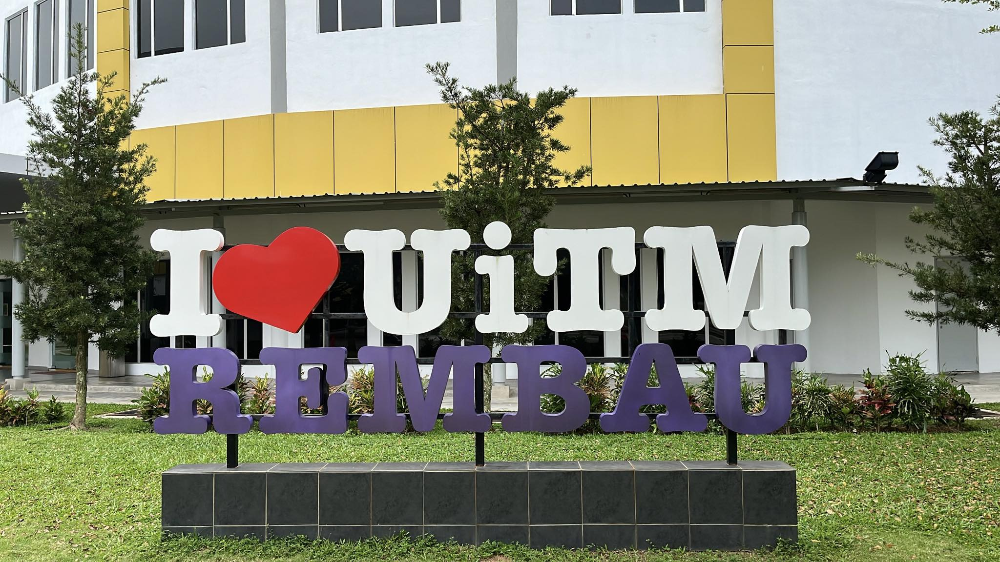

HOME
BIODATA
EDUCATION
EXPERIENCE
GALLERY
SOCIAL MEDIA
MY EDUCATION
01
Sekolah Kebangsaan Seri Bayu, Manjung, Perak
Website Sekolah Kebangsaan Seri Bayu (SKSB)
02
Sekolah Menengah Jenis Kebangsaan Dindings, Lumut, Perak
Website Sekolah Menengah Jenis Kebangsaan Dindings (DGS)
03
Universiti Teknologi Mara (UiTM), Kampus Rembau, Negeri Sembilan

Website Universiti Teknologi Mara (UiTM)